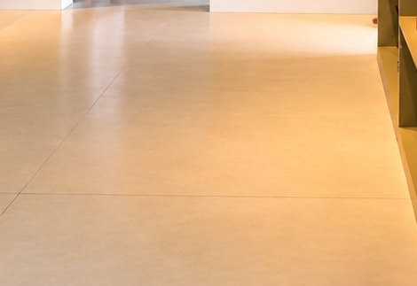
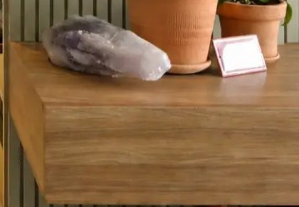
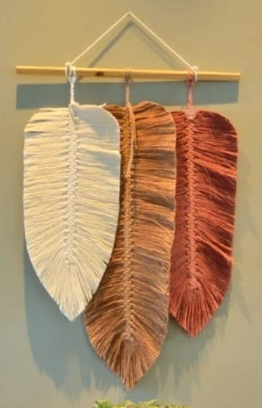
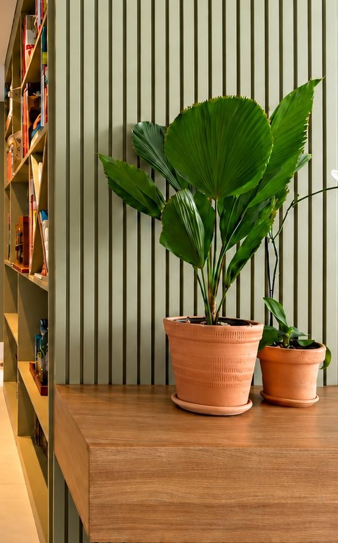
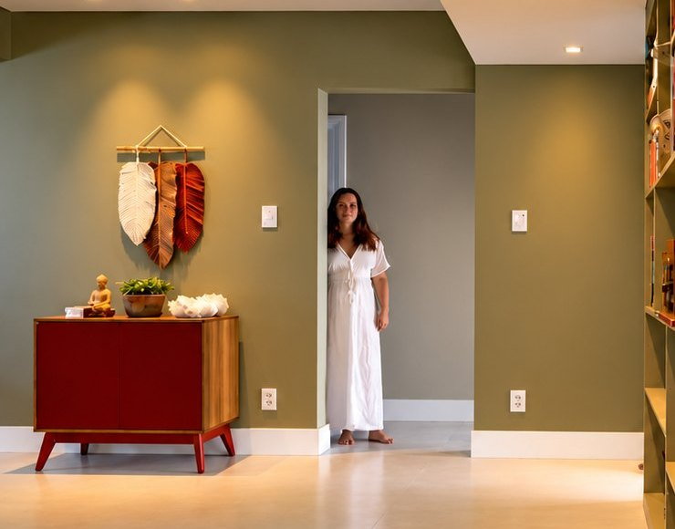
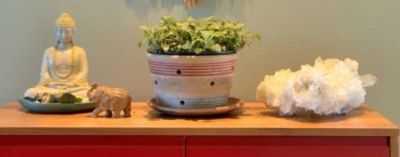
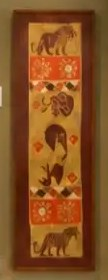
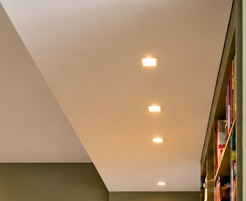

No Rio Vermelho, em Salvador, a reforma deu ao apartamento piso novo, cores novas, marcenaria sob medida e uma iluminação toda refeita.
Apartamento Rio Vermelho
- Visão geral
- A reforma renovou o apartamento por inteiro. O piso existente foi trocado, as paredes ganharam novas cores e a marcenaria foi desenhada para atender às necessidades das moradoras. A iluminação também foi toda nova.
- Intervenções
- Piso, pintura, marcenaria e iluminação
- Fotografia
- Roberto Moreira Rego
Materiais



Os materiais seguem uma mesma linguagem. O piso claro e contínuo deixa as cores em primeiro plano, a madeira do tampo e da marcenaria aquece o corredor, e as fibras do macramê, o barro dos vasos e a pedra sobre o tampo trazem textura.


A estante embutida, o painel de ripas e o tampo de madeira formam uma única peça, feita para as medidas do corredor. O painel repete o verde das paredes e integra a marcenaria à arquitetura.
Conceito


Para a Débora, projetar é encontrar o equilíbrio entre beleza e personalidade. Neste apartamento, o verde das paredes dá a base e o vermelho aparece sem pedir licença, num ponto só. Os objetos de decoração e o painel bordado completam a composição.

No fim do corredor, o aparador vermelho emoldurado em madeira recebe o macramê, o vaso e os objetos. É o único ponto de vermelho do apartamento, e o verde das paredes o sustenta.
Iluminação

Lâmpadas com temperatura de cor mais baixa criam uma atmosfera mais intimista e valorizam os itens de decoração. Os pontos embutidos no forro acompanham a estante ao longo de todo o corredor.